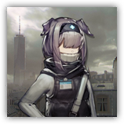

预备干员 - 医疗 Reserve Operator - Medic
远程 法术；普通 类人（任意；助战者）
|
 |
罗德岛预备干员。来自罗德岛的预备干员，尚且缺乏经验，但在经过一定的战术训练和磨合后可以执行更加复杂困难的任务。 医疗。该类型干员属于战场救护专业人员，配备单目标或群体治疗设备。能够有效维持战线稳定性，在持续作战环境中价值显著。由于此类干员本身的脆弱性，需要注意部署位置和保护。 |
“请就这样先不要动，不可以，尾巴也不可以动啦。”
预备干员 - 医疗丨Reserve Operator - Medic
中型类人（任意；助战者），中立
| AC 13（轻甲） | 先攻 +1（11） |
| HP 6×等级（等级×d6的生命骰） | |
| 速度 30 尺 | |
| 调整 | 豁免 | 调整 | 豁免 | 调整 | 豁免 | |||||||||
|---|---|---|---|---|---|---|---|---|---|---|---|---|---|---|
| 力量 | 10 | +0 | +0 | 敏捷 | 12 | +1 | +1 | 体质 | 10 | +0 | +0 | |||
| 智力 | 10 | +0 | +0 | 感知 | 16 | +3 | +3 | 魅力 | 12 | +1 | +1 |
| 技能 医疗+3+PB，求生+3+PB，游说+PB，洞悉+PB |
| 感官 黑暗视觉30尺，被动察觉11+PB |
| 语言 通用语，以及一门任意语言 |
| PB 等于其指引者的加值 |
特质 Traits
助战抗性 Retainer Resistance。助战者进行任何豁免检定时，均可以加上指引者的熟练加值。
3级：疗养进程 Recuperation process（1次/日）。医疗干员完成一次长休后，可以赋予一个在一起休息的生物PB×D6的临时生命值。
动作 Actions
招牌攻击：应急药剂 Emergency Medicine。敏捷豁免检定：DC10+PB，单个医疗所选的60尺内生物。失败：目标必须消耗并投掷一枚生命骰，并加上指引者的PB。然后目标受到等额的毒素伤害，或者恢复等额生命值（由医疗选择）。
3级：药剂储备 Coordinate Shoot（3次/日）。医疗从医疗箱中取出一份储备的药剂并为触碰内的一名自愿或失能生物服下或注射，然后为其时加一些效应（每个生物在每次长休间仅能从中受影响一次）。药物可以是以下选项：
- 解毒剂。解除目标生物身上的状态，可以是目盲、耳聋、中毒，前提是其原本可以通过每回合的重复豁免来解除。
- 镇静剂。解除目标生物身上的状态，可以是恐慌、魅惑，前提是其原本可以通过每回合的重复豁免来解除。
- 止痛药。目标生物的生命值上限和生命值在8小时内提高 PB 点。
5级：增强剂量 Enhanced Dose（3次/日）。医疗发动一次招牌攻击，如果目标已浴血，则这次攻击的造成伤害量或恢复量获得PB×D6的加值。
附赠动作 Actions
7级：援护治疗 Aid Treatment（1次/日）。医疗选择60尺内的一个可见盟友，立即为目标赋予PB×D6的临时生命值。